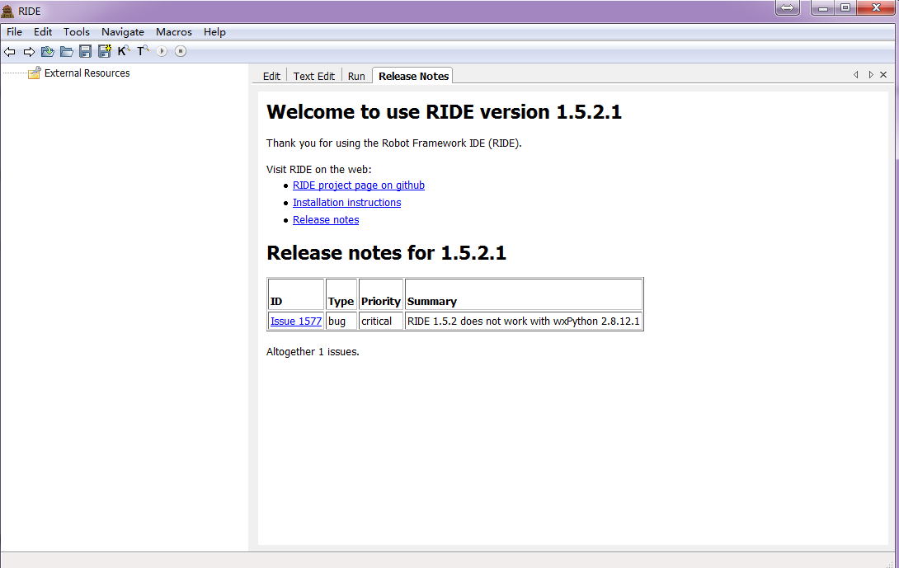

辛对红的Wiki
Table of Contents
Talk is cheap,show me the code. –用图表和代码说话的程序媛 Everything should be made as simple as possible,but not any simpler – Albert Einstein
1 Git
Git是个分布式版本控制系统，以前在一个神秘兮兮的单位一直用SVN，后来买了这个域名才开始学习。从一个大叔的官网开始入门的，当然不知道廖雪峰是不是大叔，总之，知识渊博又有耐心的程序员统称大叔。
这个链接号称是史上最浅显易懂的Git教程，但地址链接长得令人发指，一个字，难看。 http://www.liaoxuefeng.com/wiki/0013739516305929606dd18361248578c67b8067c8c017b000
下面是图表，你看不懂可以在拉到页面底端，给个评论，好让我鄙视你。

2 Python
刚接触的Python的时候跟大部分的小白一样（虽然现在也是小白），纠结着到底是学Python2.7呢还是Python3.0呢，重要性约等于小时后纠结长大了是上清华还是北大。
像我这种喜欢炫耀与时俱进的人私下是想学Python3.0的，3.0>2.7嘛，对吧。
最后公司的大神说项目组用的都是Python2.7，一组两治是要怎么破？于是我乖乖捡起了Python2.7的教程。
2.1 秒懂Python
题目是假的，不要相信，就跟21天精通xx一样，能决定一座大厦造多高的还是基石。
2.2 Python基础语法
2.3 Python高级特性
3 Wiki
有个大神告诉我世界上有MdWiki这种东西，于是我迷上了MarkDown;
又有个大神告诉我世界上Vim党还有Emacs党，Emacs里有个Org-mode，而我现在只学会用来写文档。
当程序媛仅仅的好处可能是: 当遇到问题的时候，能更被温柔而耐心地对待。IT领域的性别歧视无法忽视，仰天长叹！仰天长叹出门去，我辈岂是蓬蒿人，哪里不对吗？
3.1 MarkDown
3.1.1 MarkDown
这是一种标记语言，支持多种格式，跨平台解析，真的轻量级，语法很简单，你要觉得我在骗你，那以后你恐怕是得交智商税了。
3.1.2 MdWiki
MdWiki这是个支持MarkDown语法文档的主题,把写好的文档跟主题仍在一起后在浏览器端打开，当当当，美如画~~晕不晕，晕就对了，高斯模糊+动感模糊的加密文档，我赌一块钱，你不想再看了~往下走吧
3.1.3 StackEdit
编辑的文档要预览格式可以用google chrome的插件StackEdit，一边写文档，一边看格式，一边看格式，一边看文档，无限循环
3.2 Org-mode
Org-mode语法是MarkDown内容的多少倍我不就说了，直接上图，啊，图好长，出门右转看思维导图去吧，就是这个丑链接：http://naotu.baidu.com/file/4f1450d23ffd8d79698eb4469071d48d?token=3989fc33acac6871
千万不要参照着来，Emacs的奇技淫巧不是一两句话就可以总结完的，我只是大自然的搬运工。
4 SQL
这个放在这只是因为标题很短，其实是不想总结，我喜欢图形界面，我真的喜欢图形界面。
5 Shell
说起Linux，有个传奇叫鸟哥，他写了一本私房菜，不过以后按我的规则以后升级为鸟叔了。
这里只提Shell，也不敢说学完了，鸟叔的官网是 http://vbird.dic.ksu.edu.tw/
5.1 Shell基础
5.2 Shell编程
6 Java
这个放在这只是因为标题很短，而且同样学不完，心好累，感觉不会再爱了。
7 Algorithm
这个放在这只是因为标题很短，而且永远学不完。下面是你小学时就会的算法，木哈哈~~瞪我干什么，我又没说是程序设计算法
8 Jenkins
Jenkins是一个基于社区开发的开源可扩展持续集成服务（CI）,源于Hudson，使用java开发。它可以持续编译，运行你的代码；运行UT或集成测试；将运行结果发送至邮件，或展示成报告。
容易配置，插件又多，构建方式多，部署方式又多，同时可以监控一些定时执行的任务，无须人工干预，也是个偷懒的利器。
我的理想是Jenkins+gitlab+TestLink+Bugzilla+LDAP认证+Findbugs+testNG+ssh分布式部署测试360全自动化，但因为服务器权限不在我这，IT又不会配，Jenkins只是一个构建部署的小家伙，作用有限，沉吟至今。
9 TestNG
这是一个单元测试框架，注脚和xml配置让用例执行起来方面很多。
10 Selenium
10.1 UI自动化
10.2 Selenium相关
元素定位方法的优缺点
元素定位方法的性能比较
发福利了，教程链接：http://www.51testing.com/zhuanti/selenium.html
11 RobotFrameWork
自动化测试框架。我会告诉你图形界面ride这么丑吗？但我可能要跟这家伙打很久的交道，加上Selenium库的robot，也是自动化测试中的战斗机

12 SpotLight
性能数据可视化的利器，直接上图，不要被震撼到。
12.1 Spotlight for MySQL

12.2 Spotlight for windows

12.3 Spotlight on Unix

13 ELK Log System
ELK 由 ElasticSearch 、 Logstash 和 Kiabana 三个开源工具组成，就是帮助懒人搜集多台服务器的日志，能用机器干的事我们决不自己做，就是这么简单，就是这么任性，就是这么拽。
14 Http
15 Html/CSS/DIV
没有比W3Cschool更好的教程了，http://www.w3school.com.cn/
16 Jmeter
性能测试的工具，跟Loadrunner类似。

17 Postman
Chrome的一个插件，用来做接口功能测试还是不错的。
18 Kali Linux
感觉还没入门，网络基础太薄弱。
19 读书列表
书单从2016年5月28日开始计算，以前的统统归零。
| 序号 | 书名 | 阅读时间 | 简评 |
| 1 | 黑客与画家 | 20160528-20160602 | 高屋建瓴 |
| 2 | 社会工程学 | 201606 | 最近没读书，感觉像只猪 |
| 3 | RobotFramework自动化测试修炼宝典 | 201606 | 自动化类 |
| 4 | selenium2 python自动化测试实战 | 201606 | 自动化类 |
| 5 | Web渗透技术及实战案例解析 | 201607 | 安全类 |
| 6 | 软件性能测试与Loadrunner实战教程 | 201606 | 性能类 |
| 7 | Kali Linux渗透教程 | 201607 | 安全类 |
| 8 | Head First Python | 201607 | 编程类 |
20 网站更新记录1
| 序号 | 时间 | 类别 | 更新 | 备注 | 自言自语 |
|---|---|---|---|---|---|
| 1 | 2016.3.29 | Wiki上线 | 完成基本类别架构和风格设计编码，Github文件更新 | 使用Emacs Org-mode编写，使用org-html-themes，托管在Github | 创造一件东西就跟生孩子一样痛苦而喜悦，虽然我并没生过 |
| 2 | 2016.3.30 | 内容创建 | 更新Jenkins的操作内容 | Jenkins+maven+GitLab的持续集成 | 这才刚开始写字，就时刻有一种此处省略一万字的冲动,喵~ |
| 3 | 2016.4.1 | 打卡 | Jenkins构建失败 | gradle是什么鬼 | 抓狂中 |
| 4 | 2016.4.4 | 打卡 | 删除部分近期不可能更新的类别 | 开始学习微信公众号的开发和运营 | 知道怎么添加图片了，被网络教程误导，直接添加路径，相对绝对都行 |
| 5 | 2016.4.7 | 打卡 | 无 | 总结了testng和selenium webdriver的使用 | 搭建起自动化流程 |
| 6 | 2016.4.13 | 打卡 | 没时间更新 | 编译后图片又无法显示了 | 衰 |
| 7 | 2016.5.28 | 更新 | 增加评论插件，调整结构，更换夏天主题 | 觉得难看来咬我啊，删除了部分短期内不可能更新的章节，可以在评论区给意见，某个说我画的丹妮莉丝像马云的同学可以静默了 | 我没有你们想象的那么懒哦 |
| 8 | 2016.6.18 | 更新 | 补充空白部分内容，删除不更新的章节 | 最近赶项目进度，连轴转，没时间更新了。不断做减法，生活约来越简单而纯粹 | 累觉不爱 |
Footnotes:
有找互联网行业工作的同学可以联系我，小女子举贤不避亲，求才若渴哦。Show me the code ,just do IT.